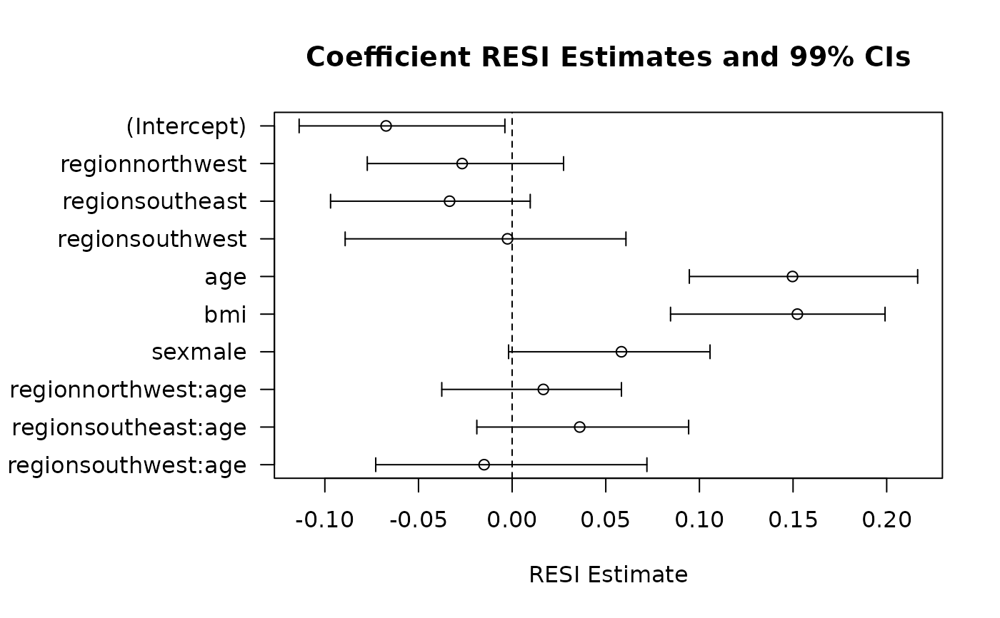
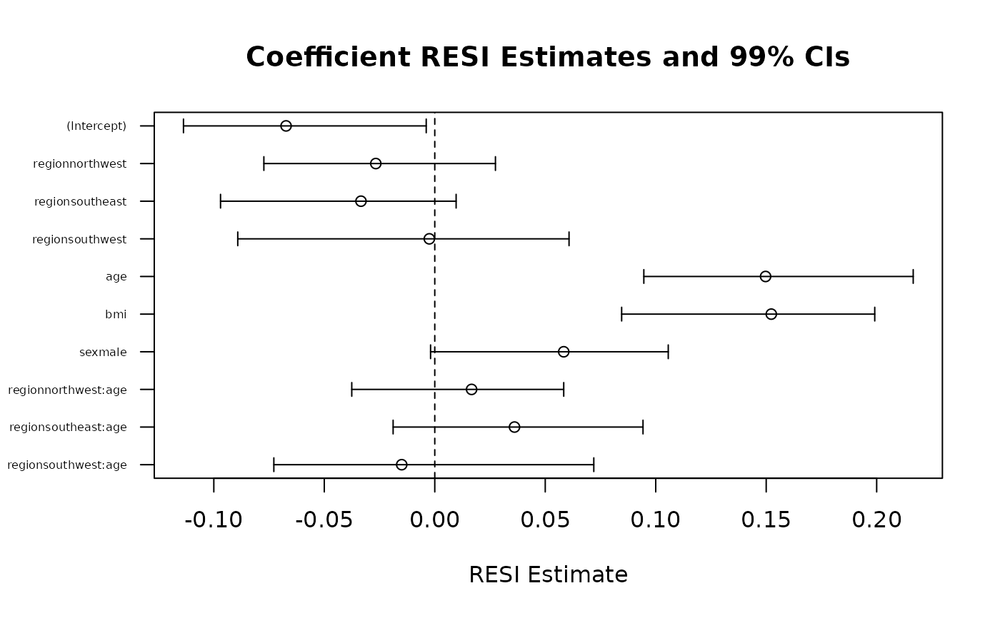

This function will estimate the robust effect size (RESI) from Vandekar, Tao, & Blume (2020) and its confidence interval in various ways for a fitted model object. The overall RESI is estimated via a Wald test. RESI is (optionally) estimated for each factor in coefficients-style table. RESI is (optionally) estimated for each variable/interaction in an Anova-style table for models with existing Anova methods. CIs can be calculated using either non-parametric or Bayesian bootstrapping.
Usage
resi(model.full, ...)
# Default S3 method
resi(
model.full,
model.reduced = NULL,
data,
anova = TRUE,
coefficients = TRUE,
overall = TRUE,
nboot = 1000,
boot.method = "nonparam",
vcovfunc = sandwich::vcovHC,
alpha = 0.05,
store.boot = FALSE,
Anova.args = list(),
vcov.args = list(),
unbiased = TRUE,
parallel = c("no", "multicore", "snow"),
ncpus = getOption("boot.ncpus", 1L),
long = FALSE,
clvar = NULL,
...
)
# S3 method for class 'glm'
resi(
model.full,
model.reduced = NULL,
data,
anova = TRUE,
coefficients = TRUE,
overall = TRUE,
nboot = 1000,
vcovfunc = sandwich::vcovHC,
alpha = 0.05,
store.boot = FALSE,
Anova.args = list(),
vcov.args = list(),
unbiased = TRUE,
parallel = c("no", "multicore", "snow"),
ncpus = getOption("boot.ncpus", 1L),
...
)
# S3 method for class 'lm'
resi(
model.full,
model.reduced = NULL,
data,
anova = TRUE,
coefficients = TRUE,
overall = TRUE,
nboot = 1000,
boot.method = "nonparam",
vcovfunc = sandwich::vcovHC,
alpha = 0.05,
store.boot = FALSE,
Anova.args = list(),
vcov.args = list(),
unbiased = TRUE,
parallel = c("no", "multicore", "snow"),
ncpus = getOption("boot.ncpus", 1L),
...
)
# S3 method for class 'nls'
resi(
model.full,
model.reduced = NULL,
data,
coefficients = TRUE,
overall = TRUE,
nboot = 1000,
boot.method = "nonparam",
anova = FALSE,
vcovfunc = r_nlshc,
alpha = 0.05,
store.boot = FALSE,
vcov.args = list(),
unbiased = TRUE,
parallel = c("no", "multicore", "snow"),
ncpus = getOption("boot.ncpus", 1L),
...
)
# S3 method for class 'survreg'
resi(
model.full,
model.reduced = NULL,
data,
anova = TRUE,
coefficients = TRUE,
overall = TRUE,
nboot = 1000,
vcovfunc = vcov,
alpha = 0.05,
store.boot = FALSE,
Anova.args = list(),
unbiased = TRUE,
parallel = c("no", "multicore", "snow"),
ncpus = getOption("boot.ncpus", 1L),
...
)
# S3 method for class 'coxph'
resi(
model.full,
model.reduced = NULL,
data,
anova = TRUE,
coefficients = TRUE,
overall = TRUE,
nboot = 1000,
vcovfunc = vcov,
alpha = 0.05,
store.boot = FALSE,
Anova.args = list(),
unbiased = TRUE,
parallel = c("no", "multicore", "snow"),
ncpus = getOption("boot.ncpus", 1L),
...
)
# S3 method for class 'hurdle'
resi(
model.full,
model.reduced = NULL,
data,
coefficients = TRUE,
overall = TRUE,
nboot = 1000,
vcovfunc = sandwich::sandwich,
anova = FALSE,
alpha = 0.05,
store.boot = FALSE,
vcov.args = list(),
unbiased = TRUE,
parallel = c("no", "multicore", "snow"),
ncpus = getOption("boot.ncpus", 1L),
...
)
# S3 method for class 'zeroinfl'
resi(
model.full,
model.reduced = NULL,
data,
coefficients = TRUE,
overall = TRUE,
nboot = 1000,
vcovfunc = sandwich::sandwich,
anova = FALSE,
alpha = 0.05,
store.boot = FALSE,
vcov.args = list(),
unbiased = TRUE,
parallel = c("no", "multicore", "snow"),
ncpus = getOption("boot.ncpus", 1L),
...
)
# S3 method for class 'geeglm'
resi(
model.full,
model.reduced = NULL,
data,
anova = TRUE,
coefficients = TRUE,
overall = TRUE,
nboot = 1000,
alpha = 0.05,
store.boot = FALSE,
unbiased = TRUE,
parallel = c("no", "multicore", "snow"),
ncpus = getOption("boot.ncpus", 1L),
...
)
# S3 method for class 'glmgee'
resi(
model.full,
model.reduced = NULL,
data,
anova = FALSE,
coefficients = TRUE,
overall = TRUE,
nboot = 1000,
alpha = 0.05,
store.boot = FALSE,
unbiased = TRUE,
parallel = c("no", "multicore", "snow"),
ncpus = getOption("boot.ncpus", 1L),
...
)
# S3 method for class 'gee'
resi(
model.full,
data,
nboot = 1000,
alpha = 0.05,
store.boot = FALSE,
unbiased = TRUE,
parallel = c("no", "multicore", "snow"),
ncpus = getOption("boot.ncpus", 1L),
...
)
# S3 method for class 'lme'
resi(
model.full,
alpha = 0.05,
nboot = 1000,
anova = TRUE,
vcovfunc = clubSandwich::vcovCR,
vcov.args = list(),
...
)
# S3 method for class 'lmerMod'
resi(
model.full,
alpha = 0.05,
nboot = 1000,
anova = TRUE,
vcovfunc = clubSandwich::vcovCR,
vcov.args = list(),
...
)
# S3 method for class 'glmmTMB'
resi(
model.full,
alpha = 0.05,
nboot = 1000,
anova = TRUE,
vcovfunc = clubSandwich::vcovCR,
vcov.args = list(),
...
)Arguments
- model.full
lm, glm, nls, survreg, coxph, hurdle, zeroinfl, gee, geeglmorlmemodel object.- ...
Ignored.
- model.reduced
Fitted model object of same type as model.full. By default `NULL`; the same model as the full model but only having intercept.
- data
Data.frame or object coercible to data.frame of model.full data (required for some model types).
- anova
Logical, whether to produce an Anova table with the RESI columns added. By default = `TRUE`.
- coefficients
Logical, whether to produce a coefficients (summary) table with the RESI columns added. By default = `TRUE`.
- overall
Logical, whether to produce an overall Wald test comparing full to reduced model with RESI columns added. By default = `TRUE`.
- nboot
Numeric, the number of bootstrap replicates. By default, 1000.
- boot.method
String, which type of bootstrap to use: `nonparam` = non-parametric bootstrap (default); `bayes` = Bayesian bootstrap.
- vcovfunc
The variance estimator function for constructing the Wald test statistic. By default, vcovHC (the robust (sandwich) variance estimator).
- alpha
Numeric, significance level of the constructed CIs. By default, 0.05.
- store.boot
Logical, whether to store all the bootstrapped estimates. By default, `FALSE`.
- Anova.args
List, additional arguments to be passed to Anova function.
- vcov.args
List, additional arguments to be passed to vcovfunc.
- unbiased
Logical, whether to use the unbiased or alternative T/Z statistic to RESI conversion. By default, `TRUE`. See details.
- parallel
See documentation for boot.
- ncpus
See documentation for boot.
- long
Logical, whether the data is longitudinal/clustered. By default, `FALSE`.
- clvar
Character, the name of the cluster/id variable if data is clustered. By default, `NULL`.
Value
Returns a list that includes function arguments, RESI point estimates, and confidence intervals in coefficients/anova-style tables
Details
The RESI, denoted as S, is applicable across many model types. It is a unitless
index and can be easily be compared across models. The RESI can also be
converted to Cohen's d (S2d) under model homoskedasticity.
This function computes the RESI point estimates and bootstrapped confidence
intervals based on Chi-square, F, T, or Z statistics. The robust (sandwich)
variance is used by default, allowing for consistency under
model-misspecification. The RESI is related to the non-centrality parameter
of the test statistic. The RESI estimate is consistent for all four
(Chi-square, F, T, and Z) types of statistics used. The Chi-square and F-based
calculations rely on asymptotic theory, so they may be biased in small samples.
When possible, the T and Z statistics are used. There are two formulas for both
the T and Z statistic conversion. The first (default, unbiased = TRUE)
are based on solving the expected value of the T or Z statistic for the RESI.
The alternative is based on squaring the T or Z statistic and using the
F or Chi-square statistic conversion. Both of these methods are consistent, but
the alternative exhibits a notable amount of finite sample bias. The alternative
may be appealing because its absolute value will be equal to the RESI based on
the F or Chi-square statistic. The RESI based on the Chi-Square and F statistics
is always greater than or equal to 0. The type of statistic
used is listed with the output. See f2S, chisq2S,
t2S, and z2S for more details on the formulas.
For GEE (geeglm, glmgee) models, a longitudinal RESI (L-RESI) and a cross-sectional, per-measurement RESI (CS-RESI) is estimated. The longitudinal RESI takes the specified clustering into account, while the cross-sectional RESI is designed to estimate the effect size if a random observation for each participant were collected cross-sectionally.
For most lm and nls model types, there is a Bayesian bootstrap
option available as an alternative to the default, standard non-parametric
bootstrap. The interpretation of a Bayesian bootstrapped interval is similar to
that of a credible interval.
Certain model types require the data used for the model be entered as an argument.
These are: nls, survreg, and coxph. Additionally, if a model
includes certain functions (splines, factor, I), the data needs to be provided.
If running into convergence issues with nls models, it is advised to refit the
nls model with starting values equal to the estimates provided by the model
and then try rerunning resi.
Methods (by class)
resi(default): RESI point and interval estimation for modelsresi(glm): RESI point and interval estimation for modelsresi(lm): RESI point and interval estimation for lm modelsresi(nls): RESI point and interval estimation for nls modelsresi(survreg): RESI point and interval estimation for survreg modelsresi(coxph): RESI point and interval estimation for coxph modelsresi(hurdle): RESI point and interval estimation for hurdle modelsresi(zeroinfl): RESI point and interval estimation for zeroinfl modelsresi(geeglm): RESI point and interval estimation for GEE modelsresi(glmgee): RESI point and interval estimation for GEE models in glmtoolboxresi(gee): RESI point and interval estimation for GEE modelsresi(lme): RESI point and interval estimation for LME (nlme) modelsresi(lmerMod): RESI point and interval estimation for lmerMod modelsresi(glmmTMB): RESI point and interval estimation for glmmTMB models - Gaussian only
References
Vandekar S, Tao R, Blume J. A Robust Effect Size Index. Psychometrika. 2020 Mar;85(1):232-246. doi: 10.1007/s11336-020-09698-2.
Kang, K., Armstrong, K., Avery, S., McHugo, M., Heckers, S., & Vandekar, S. (2021). Accurate confidence interval estimation for non-centrality parameters and effect size indices. arXiv preprint arXiv:2111.05966.
Jones, M., Kang, K., Vandekar, S. (2025). Journal of Statistical Software. RESI: An R Package for Robust Effect Sizes.<doi:10.18637/jss.v112.i03>
Examples
## for timing purposes, a small number of bootstrap replicates is used in the
## examples. Run them with a higher or default `nboot` argument for better performance
## RESI on a linear model
# fit linear model
mod = lm(charges ~ region * age + bmi + sex, data = RESI::insurance)
# run resi on fitted model with desired number of bootstrap replicates
# store bootstrap results for calculating different CIs later
resi_obj = resi(mod, nboot = 50, store.boot = TRUE)
# print output
resi_obj
#>
#> Analysis of effect sizes based on RESI:
#> Confidence level = 0.05
#> Call: lm(formula = charges ~ region * age + bmi + sex, data = RESI::insurance)
#>
#> Coefficient Table
#> Estimate Std. Error t value Pr(>|t|) RESI 2.5%
#> (Intercept) -5359.4352 2175.9439 -2.4630 0.0139 -0.0673 -0.1195
#> regionnorthwest -2339.4433 2395.1507 -0.9767 0.3289 -0.0267 -0.0758
#> regionsoutheast -3230.8512 2643.1099 -1.2224 0.2218 -0.0334 -0.0896
#> regionsouthwest -232.4839 2574.2823 -0.0903 0.9281 -0.0025 -0.0540
#> age 220.3325 40.2091 5.4797 0.0000 0.1497 0.0841
#> bmi 323.7725 58.0849 5.5741 0.0000 0.1523 0.1248
#> sexmale 1328.0215 621.7421 2.1360 0.0329 0.0584 0.0141
#> regionnorthwest:age 34.9040 57.2364 0.6098 0.5421 0.0167 -0.0338
#> regionsoutheast:age 83.6359 63.3258 1.3207 0.1868 0.0361 -0.0157
#> regionsouthwest:age -33.6290 61.4065 -0.5476 0.5840 -0.0150 -0.0642
#> 97.5%
#> (Intercept) -0.0059
#> regionnorthwest 0.0252
#> regionsoutheast 0.0296
#> regionsouthwest 0.0522
#> age 0.2050
#> bmi 0.2036
#> sexmale 0.0931
#> regionnorthwest:age 0.0611
#> regionsoutheast:age 0.0795
#> regionsouthwest:age 0.0399
#>
#>
#> Analysis of Deviance Table (Type II tests)
#>
#> Response: charges
#> Df F Pr(>F) RESI 2.5% 97.5%
#> region 3 1.5959 0.1886 0.0365 0.0078 0.1065
#> age 1 117.7046 0.0000 0.2951 0.2421 0.3410
#> bmi 1 31.0708 0.0000 0.1498 0.1217 0.2017
#> sex 1 4.5624 0.0329 0.0515 0.0000 0.0889
#> region:age 3 1.1167 0.3412 0.0161 0.0000 0.0968
#>
#> Overall RESI comparing model to intercept-only model:
#>
#> Res.Df Df F Pr(>F) RESI 2.5% 97.5%
#> 1 1328 9 20.2486 0 0.3595 0.3218 0.4103
#>
#> Notes:
#> 1. The RESI was calculated using a robust covariance estimator.
#> 2. Confidence intervals (CIs) constructed using 50 non-parametric bootstraps.
# fit a reduced model for comparison
mod_red = lm(charges ~ bmi, data = RESI::insurance)
# running resi and including the reduced model will provide almost the exact same
# output as not including a reduced model. The difference is that the "overall"
# portion of the output will compare the full model to the reduced model.
# The "summary" and "anova" RESI estimates will be the same. (The bootstrapped
# confidence intervals may differ.)
resi(model.full = mod, model.reduced = mod_red, nboot = 10)
#>
#> Analysis of effect sizes based on RESI:
#> Confidence level = 0.05
#> Full Model:lm(formula = charges ~ region * age + bmi + sex, data = RESI::insurance)
#> Reduced Model:lm(formula = charges ~ bmi, data = RESI::insurance)
#>
#>
#> Coefficient Table
#> Estimate Std. Error t value Pr(>|t|) RESI 2.5%
#> (Intercept) -5359.4352 2175.9439 -2.4630 0.0139 -0.0673 -0.1137
#> regionnorthwest -2339.4433 2395.1507 -0.9767 0.3289 -0.0267 -0.0841
#> regionsoutheast -3230.8512 2643.1099 -1.2224 0.2218 -0.0334 -0.0724
#> regionsouthwest -232.4839 2574.2823 -0.0903 0.9281 -0.0025 -0.0456
#> age 220.3325 40.2091 5.4797 0.0000 0.1497 0.1261
#> bmi 323.7725 58.0849 5.5741 0.0000 0.1523 0.1188
#> sexmale 1328.0215 621.7421 2.1360 0.0329 0.0584 0.0147
#> regionnorthwest:age 34.9040 57.2364 0.6098 0.5421 0.0167 -0.0327
#> regionsoutheast:age 83.6359 63.3258 1.3207 0.1868 0.0361 0.0012
#> regionsouthwest:age -33.6290 61.4065 -0.5476 0.5840 -0.0150 -0.0742
#> 97.5%
#> (Intercept) -0.0328
#> regionnorthwest 0.0296
#> regionsoutheast 0.0049
#> regionsouthwest 0.0530
#> age 0.2095
#> bmi 0.1673
#> sexmale 0.0984
#> regionnorthwest:age 0.0657
#> regionsoutheast:age 0.0623
#> regionsouthwest:age 0.0292
#>
#>
#> Analysis of Deviance Table (Type II tests)
#>
#> Response: charges
#> Df F Pr(>F) RESI 2.5% 97.5%
#> region 3 1.5959 0.1886 0.0365 0.0415 0.1157
#> age 1 117.7046 0.0000 0.2951 0.2643 0.3545
#> bmi 1 31.0708 0.0000 0.1498 0.1156 0.1650
#> sex 1 4.5624 0.0329 0.0515 0.0000 0.0945
#> region:age 3 1.1167 0.3412 0.0161 0.0000 0.0870
#>
#> Overall RESI comparing full model to reduced model:
#>
#> Res.Df Df F Pr(>F) RESI 2.5% 97.5%
#> 1 1328 8 15.9113 0 0.2983 0.2797 0.377
#>
#> Notes:
#> 1. The RESI was calculated using a robust covariance estimator.
#> 2. Confidence intervals (CIs) constructed using 10 non-parametric bootstraps.
# used stored bootstrap results to get a different alpha-level confidence interval
summary(resi_obj, alpha = c(0.01, 0.1))
#>
#> Analysis of effect sizes based on RESI:
#> Confidence level = 0.01 0.1
#> Call: lm(formula = charges ~ region * age + bmi + sex, data = RESI::insurance)
#>
#> Coefficient Table
#> Estimate Std. Error t value Pr(>|t|) RESI 0.5%
#> (Intercept) -5359.4352 2175.9439 -2.4630 0.0139 -0.0673 -0.1322
#> regionnorthwest -2339.4433 2395.1507 -0.9767 0.3289 -0.0267 -0.0814
#> regionsoutheast -3230.8512 2643.1099 -1.2224 0.2218 -0.0334 -0.0918
#> regionsouthwest -232.4839 2574.2823 -0.0903 0.9281 -0.0025 -0.0664
#> age 220.3325 40.2091 5.4797 0.0000 0.1497 0.0783
#> bmi 323.7725 58.0849 5.5741 0.0000 0.1523 0.1033
#> sexmale 1328.0215 621.7421 2.1360 0.0329 0.0584 0.0069
#> regionnorthwest:age 34.9040 57.2364 0.6098 0.5421 0.0167 -0.0344
#> regionsoutheast:age 83.6359 63.3258 1.3207 0.1868 0.0361 -0.0320
#> regionsouthwest:age -33.6290 61.4065 -0.5476 0.5840 -0.0150 -0.0754
#> 5% 95% 99.5%
#> (Intercept) -0.0996 -0.0145 -0.0018
#> regionnorthwest -0.0754 0.0156 0.0392
#> regionsoutheast -0.0782 0.0207 0.0475
#> regionsouthwest -0.0486 0.0443 0.0608
#> age 0.0888 0.1898 0.2093
#> bmi 0.1255 0.1937 0.2100
#> sexmale 0.0197 0.0855 0.1051
#> regionnorthwest:age -0.0284 0.0605 0.0688
#> regionsoutheast:age -0.0066 0.0779 0.0902
#> regionsouthwest:age -0.0627 0.0345 0.0470
car::Anova(resi_obj, alpha = c(0.01, 0.1))
#> Df F Pr(>F) RESI 0.5% 5% 95% 99.5%
#> region 3 1.5959 0.18856 0.036480 0.001639 0.015378 0.09895 0.12483
#> age 1 117.7046 0.00000 0.295111 0.237515 0.244809 0.33200 0.35017
#> bmi 1 31.0708 0.00000 0.149798 0.099531 0.122455 0.19176 0.20815
#> sex 1 4.5624 0.03286 0.051549 0.000000 0.000000 0.08100 0.10146
#> region:age 3 1.1167 0.34115 0.016056 0.000000 0.000000 0.09391 0.10178
# the result of resi, as well as the summary or Anova of a `resi` object can be plotted
# if the resi object was created with the store.boot = `TRUE` option, any alpha
# can be specified
plot(resi_obj, alpha = 0.01)

# if the variable names on the y-axis are too long, you can reduce their size with
# the ycex.axis argument (or use regular common solutions like changing the margins)
plot(resi_obj, alpha = 0.01, ycex.axis = 0.5)

# for some model types and formula structures, data argument is required
if(requireNamespace("splines")){
# fit logistic regression model with splines
mod = glm(smoker ~ splines::ns(age, df = 3) + region, data = RESI::insurance,
family = "binomial")
# specify additional arguments to the variance-covariance function via vcov.args
resi_obj = resi(mod, data = RESI::insurance, alpha = 0.01,
vcov.args = list(type = "HC0"), nboot = 25)
summary(resi_obj)
car::Anova(resi_obj)}
#> Loading required namespace: splines
#> Analysis of Deviance Table (Type II tests)
#>
#> Response: smoker
#> Df Chisq Pr(>Chisq) RESI 0.5% 99.5%
#> splines::ns(age, df = 3) 3 1.4735 0.68841 0.000000 0 0.088404
#> region 3 7.2960 0.06304 0.056663 0 0.125447
## RESI on a survival model with alternate Z2S
if(requireNamespace("survival")){
# fit coxph model on example data from survival package
# Note: for survival models, you need to specify robust variance in the model
# creation. resi will ignore the vcovfunc argument for this reason.
mod.coxph = survival::coxph(survival::Surv(time, status) ~ age + sex + wt.loss,
data=survival::lung, robust = TRUE)
# run resi on the model
# to use the alternative Z to RESI formula (which is equal in absolute value to the
# chi-square to RESI (S) formula), specify unbiased = FALSE.
resi(mod.coxph, data = survival::lung, unbiased = FALSE, nboot = 10)}
#> Loading required namespace: survival
#>
#> Analysis of effect sizes based on RESI:
#> Confidence level = 0.05
#> Call: survival::coxph(formula = survival::Surv(time, status) ~ age +
#> sex + wt.loss, data = survival::lung, robust = TRUE)
#>
#> Coefficient Table
#> Estimate Std. Error z value Pr(>|z|) RESI 2.5% 97.5%
#> age 0.0201 0.0101 1.9915 0.0464 0.1177 0.0153 0.2259
#> sex -0.5210 0.1670 -3.1202 0.0018 -0.2020 -0.3403 -0.0522
#> wt.loss 0.0008 0.0060 0.1264 0.8994 0.0000 -0.1245 0.0192
#>
#>
#> Analysis of Deviance Table (Type II tests)
#>
#> Response: survival::Surv(time, status)
#> Df Chisq Pr(>Chisq) RESI 2.5% 97.5%
#> age 1 3.9662 0.0464 0.1177 0.0153 0.2259
#> sex 1 9.7357 0.0018 0.2020 0.0522 0.3403
#> wt.loss 1 0.0160 0.8994 0.0000 0.0000 0.1245
#>
#> Overall RESI comparing model to intercept-only model:
#>
#> chi2 df P RESI 2.5% 97.5%
#> 1 13.7717 3 0.0032 0.2244 0.0998 0.4097
#>
#> Notes:
#> 1. The RESI was calculated using a robust covariance estimator.
#> 2. Confidence intervals (CIs) constructed using 10 non-parametric bootstraps.